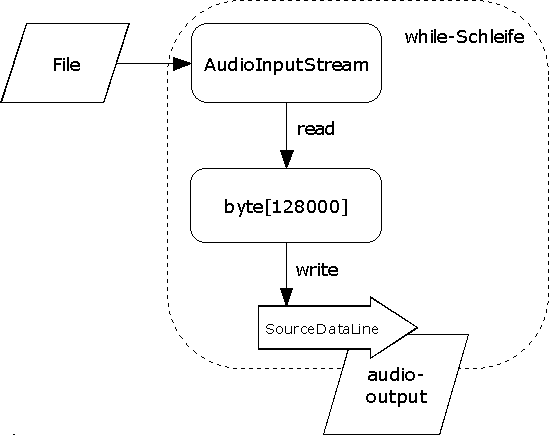
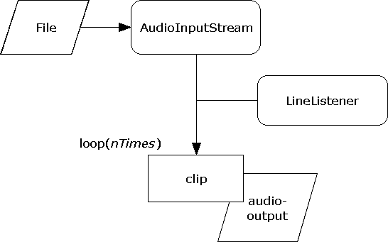
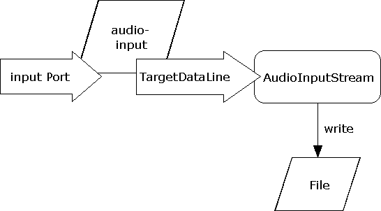

Java Sound. Eine Einführung toc prev next
1.2 Basic Examples - sampled audioDie Beispiele orientieren sich an den gleichnamigen Klasse von Matthias Pfisterer. Die Klassen können unter http://www.jsresources.org/examples/ downgeloaded werden. 1.2.1 SimpleAudioPlayerWiedergabe einer Audio-Datei. Es sei an das Gerätekonzept von JavaSound erinnert. Der audio-output der soundcard wird über das interface SourceDataLine angesprochen. Konzept: streaming (real-time Daten bzw. zu viele Daten für den Speicher)  Abwechselnd werden Audio-Daten aus einem AudioInputStream mit read gelesen und in einen Buffer geschrieben und anschliessend werden die Daten des Buffers mit write in die SourceDataLine geschrieben. 1.2.2 ClipPlayerWiedergabe einer Audio-Datei. Der audio-output der soundcard wird über das interface Clip angesprochen. Konzept: Audio Daten befinden sich preloaded im Speicher.  Die methode loop startet nicht nur die Wiedergabe, sondern ihr Argument gibt auch an wie oft Wiederholt werden soll. ClipPlayer registriert sich als Listener beim clip, um anschließend close und exit sagen zu können. 1.2.3 SimpleRecorderAufnahme einer Audio-Datei. Der audio-input der soundcard wird über das interface TargetDataLine angesprochen. Der inputPort kann z.B. der Mikrophone-Eingang sein.  |
Java Sound. Eine Einführung toc prev next [ back to a p a g e 4 u ]